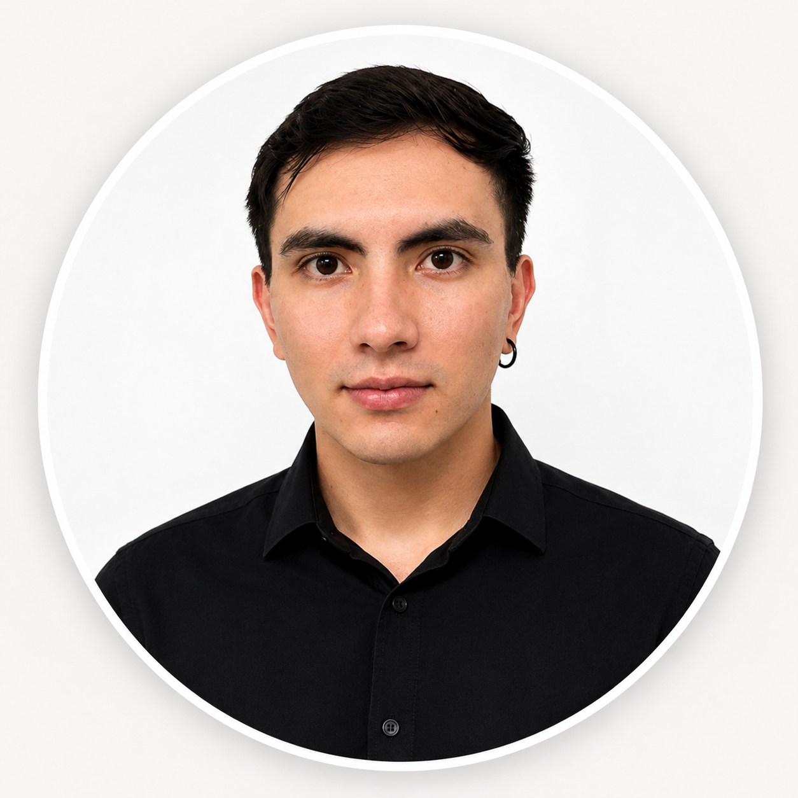
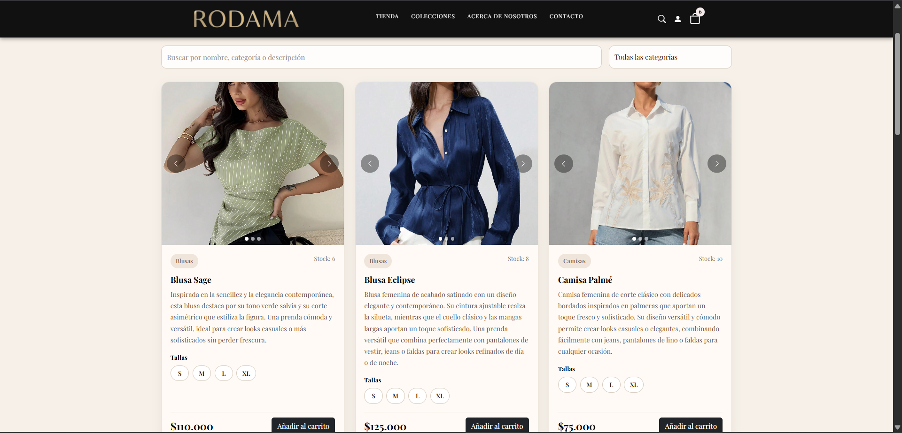
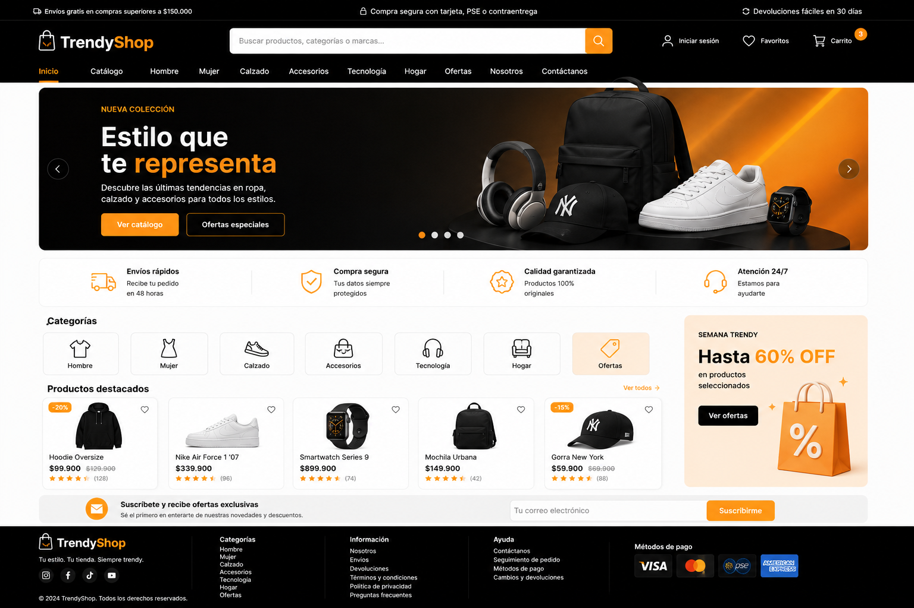
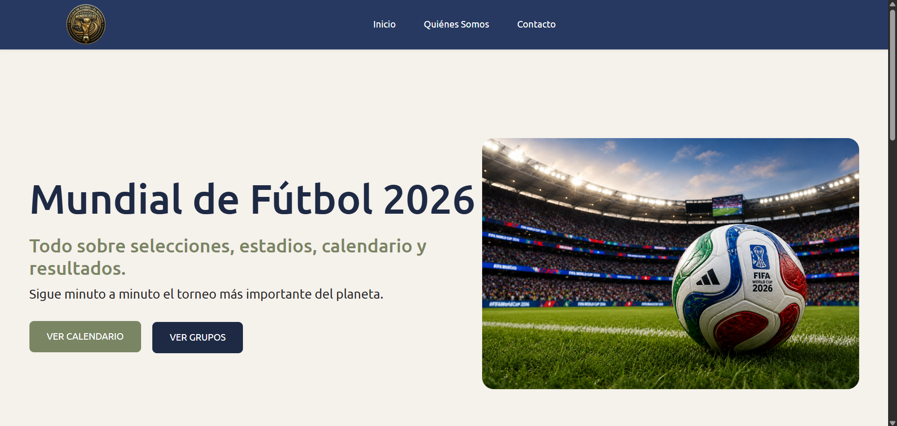

Construyendo soluciones que conectan tecnología, aprendizaje y creatividad.
Desarrollo aplicaciones web modernas utilizando Java, Spring Boot y tecnologías Frontend, creando soluciones funcionales con código limpio, aprendizaje continuo y trabajo colaborativo.

Soy estudiante de Ingeniería Electrónica en la Universidad Santo Tomás y desarrollador Java Full Stack Jr. Formé parte del Bootcamp Generation, donde fortalecí mis conocimientos en desarrollo web, programación orientada a objetos, bases de datos y trabajo colaborativo.
Me apasiona desarrollar aplicaciones web modernas utilizando Java, Spring Boot y tecnologías Frontend. Disfruto aprender constantemente, afrontar nuevos desafíos y crear soluciones que generen valor para las personas.
Universidad Santo Tomás
Java Full Stack Developer
Aplicaciones Web desarrolladas
Siempre mejorando mis habilidades
Algunos de los proyectos que desarrollé durante mi formación como Java Full Stack Developer.

E-commerce desarrollado para la venta de ropa femenina. Incluye catálogo dinámico, carrito de compras, autenticación de usuarios, panel administrativo, diseño responsive y experiencia de usuario enfocada en la elegancia.

Tienda virtual con catálogo de productos, carrito de compras, favoritos y búsqueda dinámica.

Sitio web informativo sobre el Mundial de Fútbol 2026 con diseño responsive y navegación intuitiva.
Tecnologías que he utilizado en el desarrollo de proyectos académicos y personales.
Formación, experiencias y objetivos que han construido mi perfil profesional.
Actualmente curso Ingeniería Electrónica en la Universidad Santo Tomás, fortaleciendo mis conocimientos en programación, automatización y resolución de problemas.
Formación intensiva como Java Full Stack Developer, desarrollando aplicaciones web, APIs REST, bases de datos y trabajo colaborativo utilizando metodologías ágiles.
Participé en el desarrollo de proyectos como Rodama, TrendyShop 2.0 y Blog Mundial 2026, aplicando conocimientos de frontend y backend.
Continuar creciendo como desarrollador Java Full Stack, aportando soluciones innovadoras y aprendiendo constantemente dentro de un equipo de desarrollo.
Un recorrido por los aprendizajes, retos y objetivos que han marcado mi crecimiento como desarrollador.
"Cada error que resolvemos nos convierte en mejores desarrolladores."
Cuando miro hacia atrás y comparo al estudiante que comenzó su camino en la programación con la persona que soy hoy, me doy cuenta de que mi mayor crecimiento no ha sido únicamente técnico, sino también personal.
Durante mi paso por la universidad y el Bootcamp Generation adquirí conocimientos en Java, Spring Boot, desarrollo web y bases de datos. Sin embargo, considero que el aprendizaje más valioso fue fortalecer habilidades como la comunicación, el trabajo en equipo y el aprendizaje continuo. Compartir con compañeros con experiencia me permitió aprender nuevas formas de resolver problemas y enfrentar los desafíos del desarrollo de software.
Uno de los cambios más importantes fue mi forma de enfrentar los errores al programar. Antes me frustraban y muchas veces terminaba rindiéndome. Hoy entiendo que cada mensaje de error representa una oportunidad para aprender. Resolver esos problemas ha fortalecido mi lógica, mi paciencia y mi confianza como desarrollador.
El reto más grande que he enfrentado fue durante la presentación de la propuesta de mi trabajo de grado. Recibí una crítica muy fuerte sobre mi proyecto y, aunque en ese momento fue difícil de aceptar, con el tiempo comprendí que también representaba una oportunidad para profundizar la investigación y mejorar la calidad de mi trabajo. Esa experiencia me enseñó el valor de la retroalimentación y de la mejora continua.
Hoy mi objetivo es seguir consolidando mis conocimientos en Java y Spring Boot para posteriormente profundizar en tecnologías como Spring Security, Docker y AWS. Aspiro a iniciar mi carrera como Java Full Stack Developer Jr., aprender de profesionales con experiencia y aportar valor a cada proyecto en el que participe.
Actualmente me encuentro buscando mi primera oportunidad como Java Full Stack Developer Jr.. Si deseas conocer más sobre mi trabajo o colaborar en un proyecto, estaré encantado de conversar.
danielataragarcia@gmail.com